PT Dahana Investama Corp · dic.id
Papan review desain website company profile dengan CMS, berbahasa Indonesia dan English. Struktur navigasi dan pola halaman mengacu pada pertamina.com, sedangkan identitas visual mengikuti company profile DIC. Semua layar di bawah adalah hasil render sandbox, bukan gambar ilustrasi.
1 · Referensi
Pengamatan berasal dari teks menu dan footer beranda pertamina.com. Pola hero, kartu, dan warna adalah keputusan desain DIC, bukan salinan visual Pertamina.
| Elemen di pertamina.com | Diadaptasi ke dic.id | Alasan |
|---|---|---|
| Utility bar atas: pilihan bahasa, tautan layanan, pencarian | Top bar: jam layanan, email resmi, Unduhan, switcher ID | EN; pencarian di navbar | Procurement officer sering mencari kontak dan dokumen lebih dulu |
| Menu utama: Tentang Kami, Bisnis Kami, Hubungan Investor, Media & Informasi, Keberlanjutan | Beranda, Tentang Kami, Lini Bisnis (submenu), Berita, Kontak, plus tombol Hubungi Kami | Lima halaman sesuai Assessment A#5; Lini Bisnis terpisah agar mudah dicari |
| Bisnis Kami sebagai pintu ke unit bisnis | Kartu 4 lini utama (ikon lengkung dari motif compro) dan seksi lini tambahan | Urutan mengikuti kekuatan bukti: Konstruksi, Transportation, Rental & Support, Trading |
| Media & Informasi, Pertamina Info | Berita dengan kategori Korporat, Kegiatan, Informasi; halaman Unduhan | Ritme 1 sampai 2 artikel per bulan (A#22) |
| Footer multi-kolom: alamat, email, kolom Announcement, Network, Tools, Privacy Policy | Footer 4 kolom: profil singkat, tautan, lini bisnis, kontak kantor pusat dan cabang; Kebijakan Privasi dan Peta Situs | Informasi kontak resmi selalu terlihat |
| Investor Relations, Career, Whistle Blowing, Subholding network | Tidak dipakai saat launch; ruang di footer disiapkan | Karier, portal vendor, WBS ditunda ke fase berikut (A#30) |
2 · Design system
Kode warna diambil dengan sampling dari PDF compro, bukan dari brand guideline. Perlu konfirmasi kode resmi (A#11).
Font yang tertanam di compro, berlisensi SIL OFL. Dilayani dari server sendiri (tanpa CDN).
Geometri membulat dari compro: lengkung untuk ikon lini bisnis, daun dua kelopak untuk penutup hero dan header halaman.
prefers-reduced-motion3 · Desktop
Scroll di dalam bingkai untuk melihat seluruh halaman. Konten adalah data demo sandbox.
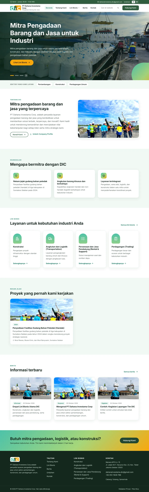
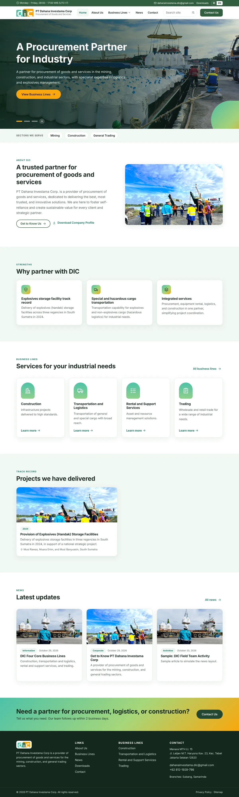
/en, switcher EN aktif, UI dan konten CMS berbahasa English.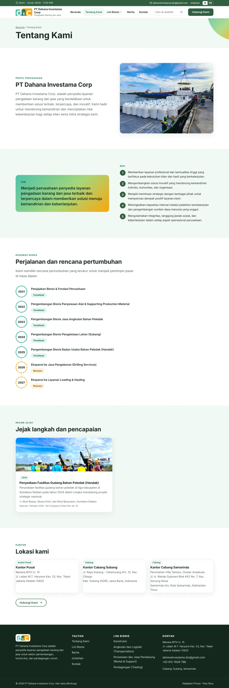
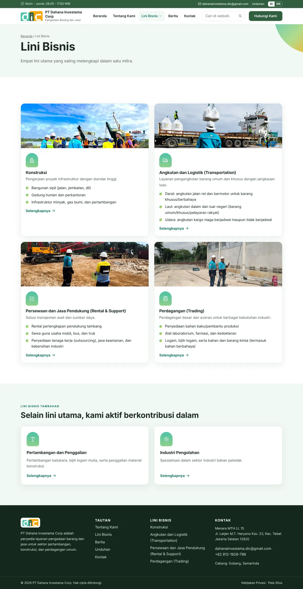
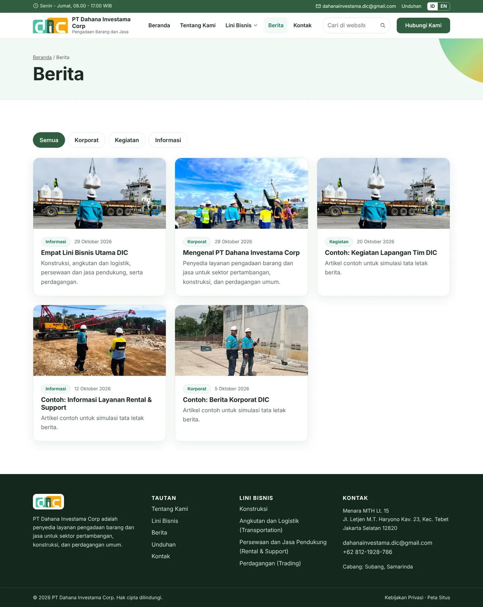
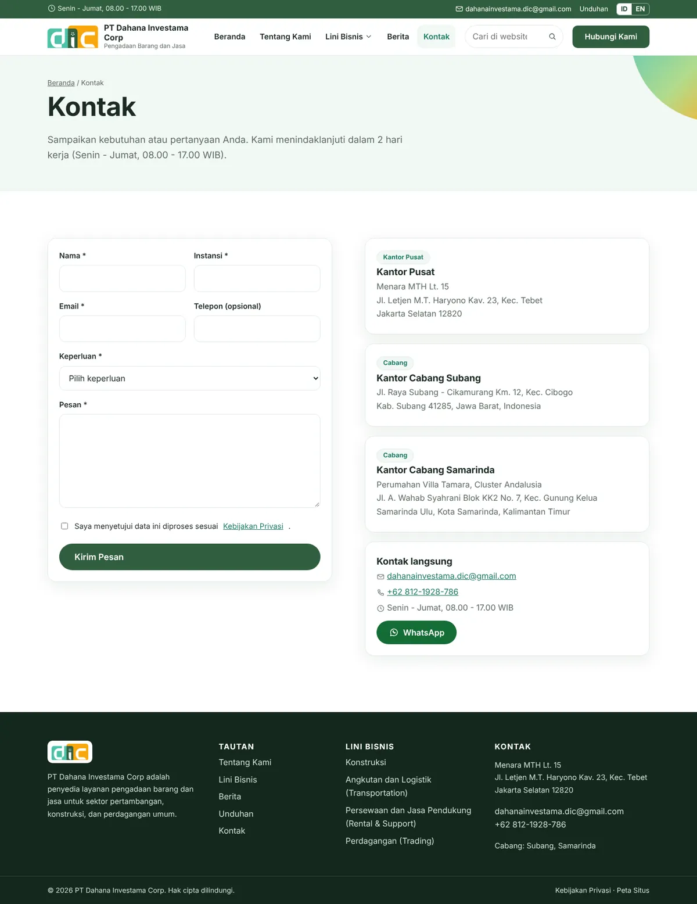
4 · Mobile
Menu hamburger dengan submenu terbuka, kolom tunggal, tombol minimal 44 px. Tidak ada scroll horizontal pada semua halaman yang diuji.
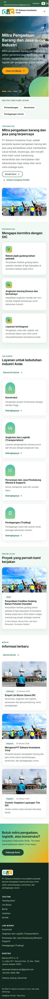
Beranda
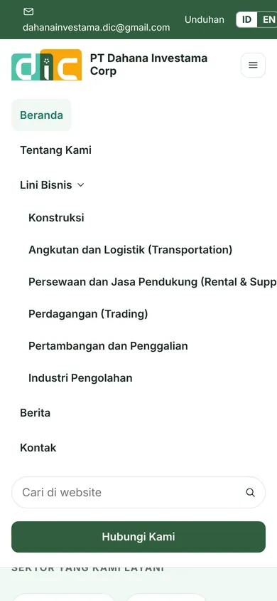
Menu terbuka
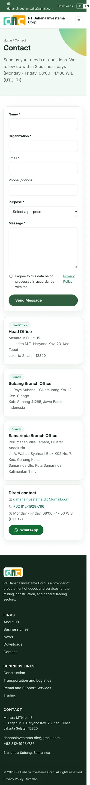
Kontak (EN)
5 · Komponen
| Komponen | Perilaku | Aturan konten |
|---|---|---|
| Header + navbar | Sticky; submenu Lini Bisnis saat hover/fokus; hamburger di bawah 1020 px | Maksimal 5 menu; satu CTA utama "Hubungi Kami" |
| Hero carousel | Otomatis 6,5 detik, dot, tombol jeda; berhenti bila reduced-motion | Maksimal 3 slide; hindari klaim "terbaik" tanpa bukti (A#4) |
| Kartu lini bisnis | Ikon lengkung, hover naik 4px, seluruh kartu dapat diklik | Label Aktif, Melalui mitra, atau Rencana (A#18) |
| Timeline roadmap | Lingkaran tahun, garis vertikal, label realisasi atau rencana | Butir 2025 sampai 2027 tayang hanya bila disetujui (A#20) |
| Rekam jejak | Kartu foto, periode, lokasi, sumber dan tanggal as-of | Wajib ada pemberi izin sebelum tayang (A#19) |
| Form kontak | Validasi sisi server, honeypot, rate limit, pesan sukses, autoresponse | Field: nama, instansi, email, telepon opsional, kategori, pesan (A#9) |
| Banner cookie | Muncul bila Analytics diaktifkan; Tolak dan Setuju setara | Analytics dimuat hanya setelah Setuju |
| Dokumen unduhan | Langsung atau melalui form (press kit) | Versi, bahasa, tanggal berlaku (A#23) |
6 · Struktur dan alur
flowchart LR H[Beranda] --> T[Tentang Kami] H --> L[Lini Bisnis] H --> B[Berita] H --> K[Kontak] L --> L1[Detail lini] B --> B1[Detail berita] H --> U[Unduhan] K --> F((Form kontak)) F --> S[(CMS: Pesan masuk)] F --> E[Email PIC + autoresponse]
7 · CMS
Editor menulis dan mengirim review, Reviewer/Publisher menayangkan, Admin mengelola pengaturan dan pengguna. Setiap field teks punya padanan English.
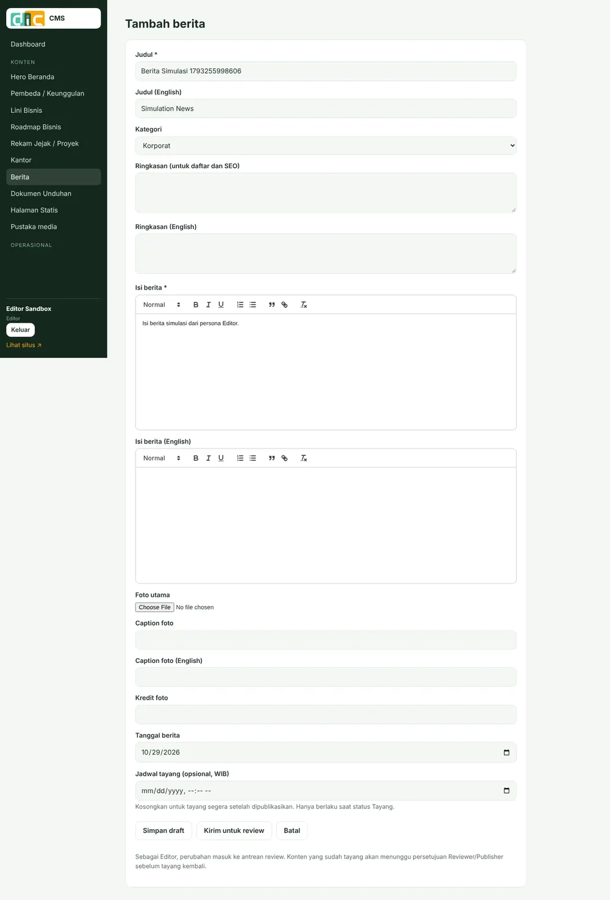
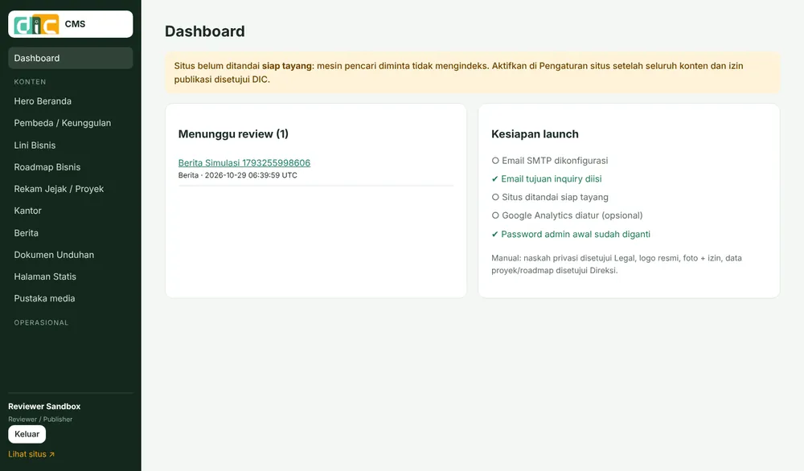
8 · Keputusan DIC
Layar pada papan ini memakai data demo sandbox, termasuk butir yang di produksi masih menunggu izin DIC (misalnya roadmap 2025 sampai 2027). Butir tersebut tidak tayang sebelum disetujui.